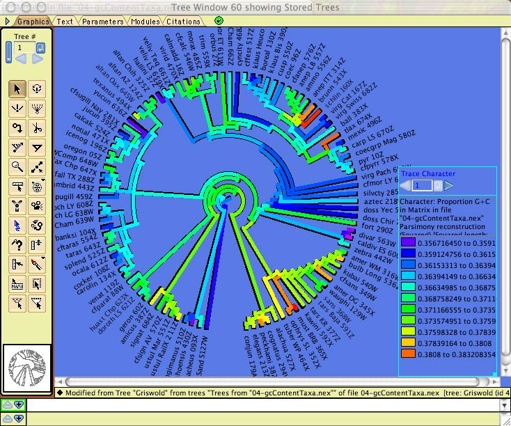
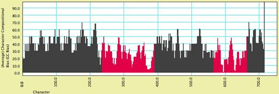
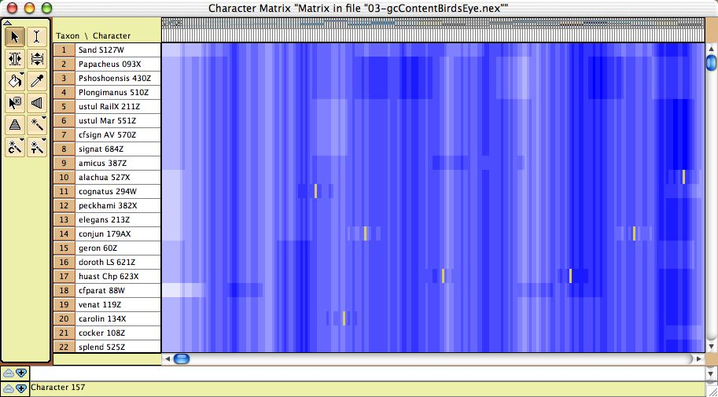
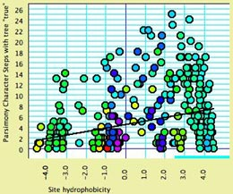
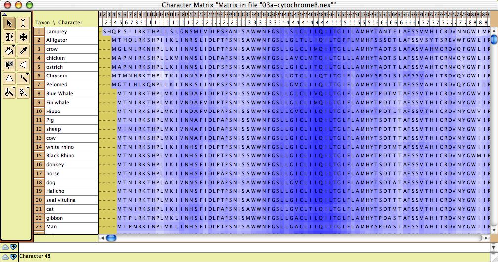
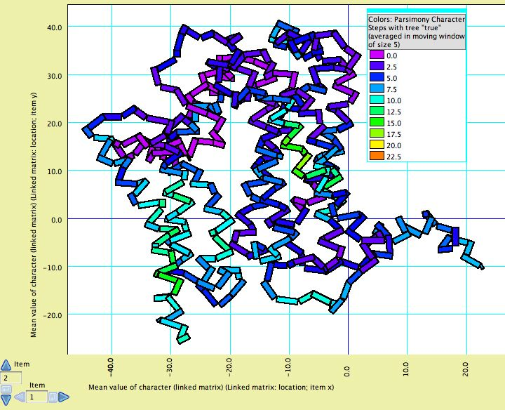

Analyzing Molecular Data
Molecular data (DNA or protein sequences) can be simulated and analyzed in various ways in Mesquite. Most of the features discussed elsewhere concerning editing and analysis of general categorical data also apply to molecular data; here we focus on features specifically designed for sequence data.Contents
- BLASTing sequences
- Simulating DNA sequence evolution
- Statistics for DNA sequences
- DNA Distances
- Statistics for Protein sequences
- Visualizing tertiary structure
- Sequence Data within populations
- Reconstructing ancestral states
BLASTing sequences
The following features allow one to BLAST sequences against GenBank or a local BLASTable database.BLAST in Web Browser
Select a sequence or portion thereof in the data matrix. Choose Matrix>Search>BLAST in Web Browser, and Mesquite will send a BLAST request to GenBank to search for matching sequences. Your default web browser should open and take you to NCBI's BLAST page.Top BLAST Matches
This tool will search a database using BLAST, and return information about the top hits, and optionally import them into the current matrix. You will be given the choice to either BLAST NCBI's database, or BLAST a local database that you have created. To use this tool, select a sequence or portion thereof in the data matrix. Choose Matrix>Search>Top BLAST Matches. You will be given the choice between BLASTing the NCBI GenBank Server, or BLASTing a local database, on your computer.If you choose to BLAST GenBank directly, you will be asked to choose among various options, including:
- maximum number of matches to be sought by Mesquite, and the eValue cutoff for acceptable hits
- whether the report of results should be saved to a text file
- whether details of the taxonomic lineage of the sequences should be reported
- whether to import the top matches into the current matrix
- the maximum time in seconds to wait for the BLAST search to complete.
If you wish instead to BLAST a local database, perhaps containing sequences you generated, then you will first need to create a BLASTable database. You can do this by following the instructions on this NCBI BLAST page. After you install the NCBI tools, you can turn a FASTA file containing your sequences using the following instructions. Let's imagine that your FASTA file is called "FASTAfileName", and that you wish to create a BLASTable nucleotide database called "BLASTableDatabaseName". Then use the following command in your computer's terminal shell:
makeblastdb -in FASTAfileName -out BLASTableDatabaseName -dbtype nucl
This will create three files, BLASTableDatabaseName.nin, BLASTableDatabaseName.nsq, and BLASTableDatabaseName.nhr. Move these to whatever folder is required for NCBI's BLAST tools to function (e.g., on the macOS, this is a "db" folder in a "blast" folder in your home directory). You can then BLAST the BLASTableDatabaseName file directly from within Mesquite. Within Mesquite, after you choose to BLAST a local database, you will first be asked to specify some details about the local database before you choose the BLAST options in the "Local BLAST Options" dialog box. In the "Database to search", put the name of the database (e.g., "BLASTableDatabaseName"). You needn't enter any other options in this dialog box for databases you have created yourself. However, if you are going to do a blastX to a local protein database that you downloaded from GenBank, you will need to check "Use ID in Definition" box.
Fetch & Add GenBank Sequences
This option, in Matrix>Utilities> Fetch & Add GenBank Sequences, allows one to enter a comma-delimited list of GenBank accession numbers, and Mesquite will acquire these from GenBank and import them into the current matrix.Simulating DNA sequence evolution
DNA sequence evolution can be simulated to build statistical tests, for instance via parametric bootstrapping. See the page on simulating DNA sequences.Statistics for DNA sequences
Calculations for categorical characters in general can be applied to DNA sequences. For example, parsimony calculations can be made for DNA sequences, as can basic descriptive statistics such as the percent of a sequence or character that is missing data or gaps. In addition, there are several modules specifically designed for DNA data, illustrated by examples in Mesquite_Folder/examples/Molecular. These calculate compositional bias:- ACGT Compositional Bias — This module supplies the compositional bias of taxa, measured over the taxon's sequence. The bias is treated as a continuous character, and thus can be used wherever characters are used, as for instance in the reconstruction of the evolution of compositional bias as shown in the image below. It can return either the proportion G+C, or separately A, C, G, and T proportions.

- Character Compositional Bias — This module supplies the compositional bias for characters. It calculates the percent of taxa with particular nucleotides (GC bias, or individual frequency of A, C, G or T) for a character. The image below shows a moving window analysis of compositional bias along a sequence; the instructions for generating the chart are given here.

- GC bias coloring of matrices — The cells of the Character Matrix Editor may be colored according to a moving window of GC bias along the sequence, as shown below, by selecting Display
>Color Cells>Color By Cell Value, then once shown the colors can be smoothed by a moving window analysis by selecting Display>Moving Window (for colors).

DNA Distances
Mesquite supports several distances for DNA data:- Uncorrected (P) distances
- Jukes-Cantor
- Kimura 2-parameter
- F81 (Felsenstein, 1981)
- F84 (Felsenstein, 1984)
- Count Sites with Gap in Pair: If this is chosen, then when the distance between two sequences is calculated, then sites that contain a gap in one of the sequences but not the other will be by default included in the calculation. If this option is unchecked, then any site at which either sequence is a gap will be excluded.
- Estimate Ambiguity Differences: If this is chosen, then sites in which one member of the pair has an ambiguity have their contribution to the distance estimated based upon the base patterns at non-ambiguous sites.
- Base Frequence on Entire Matrix: If this is chosen, then those distances that use as parameters the frequencies of bases (A, C, G, and T) will calculate those frequencies based on all sequences; if it is not chosen, then the frequencies are calculated based upon just the two sequences being compared at any one time.
Statistics for Protein Data
- Site hydrophobicity — This module supplies the average amino acid hydrophobicity, averaged across taxa, for each site. It can be used in charts, for instance to see the relationship between a phylogenetic statistic for the site (character) and it average hydrophobicity. This chart, for example, shows parsimony character steps as a function of hydrophobicity:

- Amino Acid hydrophobicity — The cells of the Character Matrix Editor may be colored according to a moving window of hydrophobicity along the sequence, as shown below, by selecting Display>Color Cells>Color By Cell Value, then once shown the colors can be smoothed by a moving window analysis by selecting Display>Moving Window (for colors).

Visualizing tertiary structure
Although there are not yet dedicated windows for visualizing phylogenetic statistics in the context of molecular structure, features have been added to the Scattergram chart to allow it to be adapted for this purpose. For instance, in this image cytochrome B is shown, with the amino acids colored according to a simple phylogenetic statistic: the number of parsimony steps on a phylogeny. The colors are smoothed by a moving window, and show that several coils of the molecule, a few at the left and one deep at the right, evolve more rapidly than others. This example is illustrated in the data file at Mesquite_Folder/examples/Molecular/06-cytochromeB.nex
To build such a chart, begin with a file with a matrix of protein sequences. The procedure is also described in the example files 08-cytochromeBlinked.nex and 09-cytochromeBscatter.nex.
- Select New Linked Matrix from the Characters menu. When a matrix is made to be linked to a second matrix, the two matrices are constrained to have the same number of characters.
- Indicate that you want the linked matrix to be a Continuous matrix, and link it to your protein matrix. Then, turn it into a three dimensional matrix (Taxa X Characters X Coordinates [x, y and z]) by using Add Item and Rename Item in the Utilities submenu of the Matrix menu of the Character Matrix Editor. The x,y,z coordinates could be added for all taxa if known, but otherwise only one taxon needs to be filled out (because we will use the average x,y,z coordinates for the amino acids).
- Once the linked matrix of xyz amino acid positions is entered, select Analysis>New Scattergram for> Characters. Indicate you want the scattergram to be for Stored Characters. (If you have "Use Stored Characters/Matrices by Default" turned on in the Defaults submenu if the File menu, Mesquite won't ask you and will simply use Stored Characters.) Indicate Same value for the two axes. In the dialog box "Values for axes", choose Mean Value of Character (Linked Matrix). In response to "Use characters from which matrix? (for Character Source)" choose the protein sequence matrix as the matrix to be used. This will plot the sites (amino acids, characters) in their correct places, but as a series of round spots.
- To change the appearance of the plot, select Join the Dots in the Special Effects submenu of the Scattergram menu. Then select Thick Joints, deselect Show Dots, deselect Join First to Last, and set the marker size larger (e.g., 8). This will result in a plot as shown above, but without the colors.
- Next, choose Color by Third Value from the Colors menu and choose the value by which to color the amino acids. For parsimony steps, for instance, choose under Character Value with current tree.
- Finally, to use a moving window to smooth the colors, select Moving Window for Colors from the Colors menu and indicate the window size (e.g., 5).